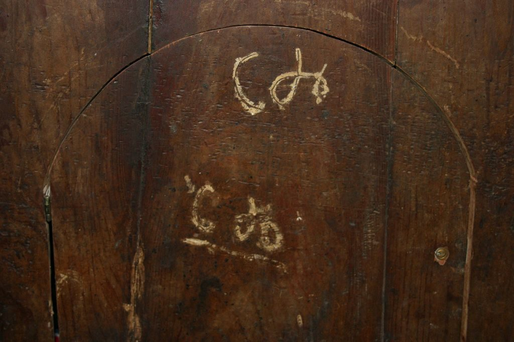
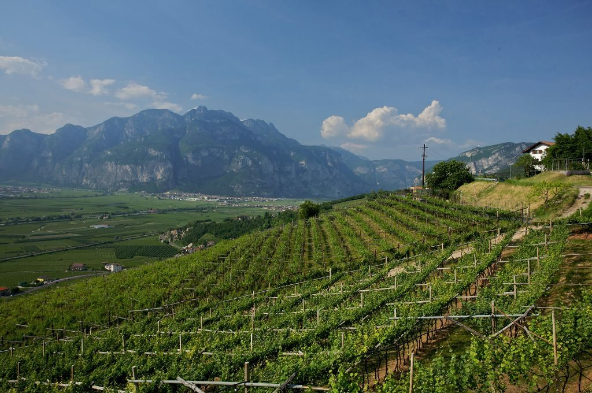
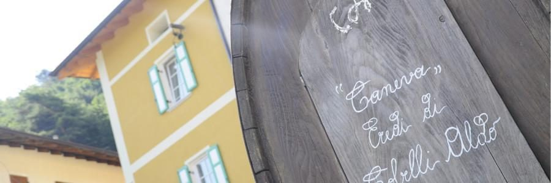

Vignaioli sulle pendici del Monte Corona, a Maso Panizza di Sopra: la nostra famiglia è qui dalla fine dell'Ottocento. Cinque vini, una cantina nella vecchia stalla e cinque stanze tra i vigneti.

Una botte di idee, sempre in fermento
Il trisavolo Giuseppe arrivò nel cuore del Trentino alla fine del 1800 e volle che Maso Panizza di Sopra diventasse la culla dei sogni della famiglia. Da allora si sono susseguite generazioni di custodi della vigna.
Eredi di Cobelli Aldo nasce dopo la morte di papà Aldo, scomparso all'improvviso proprio all'inizio di una vendemmia. Oggi ci sono Devis, Tiziano e Ivano.
La cantina e la famigliaI nostri figlioli
A Sorni di Lavis c'è chi consuma e chi si emoziona. Cinque vini, dalle nostre vigne.

Bed & break wine
A Sorni di Lavis c'è chi corre e chi rispetta il tempo. Cinque stanze a tema dedicate al mondo agricolo, la stua delle colazioni e la Terra del Gés, la nostra winery con lo shop.
L'agriturismoAl maso, sopra Lavis
Maso Panizza di Sopra, Strada del Vino 22
loc. Sorni di Lavis (TN)
cell. 331 967 2482 · info@cobelli.it